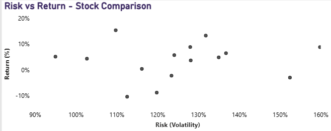
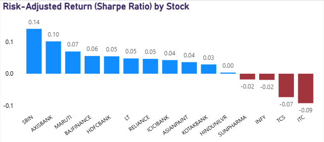
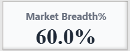
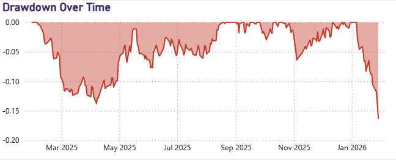
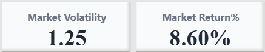
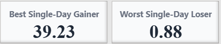

Sravani Ponakalapalli
This project analyzes historical Nifty stock data to evaluate performance, volatility, drawdowns, and risk-adjusted returns using an interactive Power BI dashboard. The goal is to help investors understand not just which stocks are generating returns, but how much risk is involved in achieving those returns. The dashboard combines return metrics, volatility measures, Sharpe Ratio, market breadth, and drawdown analysis to provide a complete view of market health and investment efficiency.
This dashboard analyzes Nifty stocks to answer three important investment questions:
Instead of looking only at returns, this dashboard combines performance, volatility, drawdowns, and risk-adjusted metrics to give a complete view of the market.
The objective of this project is to analyze Nifty stocks by combining return and risk metrics into a single interactive dashboard. The goal is to move beyond simple return analysis and evaluate whether stock performance is justified by the level of risk taken.
This dashboard helps investors compare stocks using volatility, drawdowns, and risk-adjusted performance metrics.
Investors often focus only on returns when selecting stocks, ignoring key risk indicators such as volatility and drawdowns. This can lead to choosing high-return stocks that carry excessive risk. The challenge was to create a single, intuitive dashboard that answers three core investor questions:
This scatter plot compares stock returns with volatility (risk). Each dot represents one stock.
Stocks in the top-left area (high return, low risk) are ideal. Stocks in the bottom-right (low return, high risk) may not be attractive.
What this tells us: Whether higher returns are coming with higher risk.
The Sharpe Ratio measures how much return a stock generates for each unit of risk taken.
This allows fair comparison between stocks with different volatility levels.
What this tells us: Which stock gives the best return for the risk taken.
Market Breadth shows the percentage of stocks that are positive on the latest trading day.
Strong breadth indicates a healthy market.
What this tells us: Whether the market movement is broad-based or narrow.
Drawdown measures how much a stock has fallen from its previous peak.
This helps investors understand worst-case loss scenarios.
What this tells us: How much an investor could have lost during downturns.
These KPIs summarize overall market performance.
Together, they show whether the market is generating strong returns and how stable those returns are.
The dashboard dynamically identifies:
This makes it easy to quickly spot leaders and laggards within the selected period.
This dashboard does not focus only on performance. It balances return, risk, and downside exposure in one unified analytical view.
The Nifty Risk & Return Dashboard demonstrates how financial data can be transformed into actionable insights using Power BI. By integrating performance, volatility, drawdowns, and risk-adjusted metrics, the dashboard provides a complete investment evaluation framework.